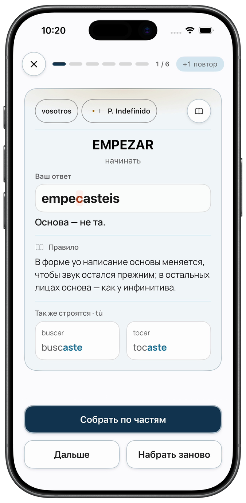

Видно, где и почему.
Вы написали empecasteis.
Тренажёр отмечает основу,
объясняет правило
и показывает формы, которые строятся так же.
Никаких очков и упрёков.
Тренажёр испанских глаголов для iPhone · испанский Испании
comer · Futuro Simple · vosotros
comereis
Нет знака.
comerИнфинитив+éisОкончание→ comeréis
Тренажёр показывает, в какой части формы ошибка, и объясняет правило.
Платить сразу не нужно: первые 7 дней бесплатно в годовой подписке
Форму вы набираете сами, целиком. Вот три ответа с ошибкой: в основе, в окончании и в знаке.
Основа — не та.
tenisteis
tuvisteis
tener · Indefinido
Окончание — не то.
hablastes
hablasteis
hablar · Indefinido
Знак здесь не нужен.
estudiásteis
estudiasteis
estudiar · Indefinido
Не лекция по всему времени, а одно правило — про вашу ошибку. Плюс два примера.
comer + -éis → comeréis
Знак в futuro стоит только на окончании, во всех лицах, кроме nosotros: ударение падает на последний слог. В -emos оно на предпоследнем, и знака нет.
Для сравнения · tú
hablarásvivirás

Вы написали empecasteis.
Тренажёр отмечает основу,
объясняет правило
и показывает формы, которые строятся так же.
Никаких очков и упрёков.
Русскоязычные и англоязычные путают разное — и там, где путают, объяснения написаны отдельно. Вот одна тема — два объяснения.
ImperfectoAyer jugamos — «вчера мы поиграли»: случилось и закончилось, это indefinido. Несовершенный вид подсказывает imperfecto не всегда: «два года я жил в Мадриде» — период закрыт, и это indefinido: viví dos años en Madrid.
ImperfectoEnglish 'played' covers both: 'we played yesterday' is one finished event — ayer jugamos, the indefinido. Where English could say 'used to' or 'was ...ing', Spanish usually takes the imperfecto — and for descriptions too: 'the house was big' — la casa era grande.
Форма, в которой вы ошиблись, вернётся через несколько заданий. Тренажёр следит за каждой формой отдельно: глагол, время, лицо.
| yo | hablaré |
|---|---|
| tú | hablarás |
| él, ella, usted | hablará |
| nosotros | hablaremos |
| vosotros | hablaréis |
| ellos, ustedes | hablarán |
Тренируются все лица. Vosotros здесь не пропускают: у него свои окончания в каждом времени.
Вернулись к повторению
Платить сразу не нужно: первые 7 дней бесплатно в годовой подписке. За 2 дня до оплаты мы напомним.
Без бесплатных дней. Отменить можно когда угодно.
Платите один раз — без подписки. Можно поделиться с семьёй через Семейный доступ.
Отменить подписку можно в любой момент: Настройки iPhone → ваше имя → Подписки. Прогресс хранится на вашем iPhone: отмена или смена тарифа его не стирают. Цены — в App Store, в вашей валюте.
Подойдёт, если
Вы знаете, что такое Indefinido и Imperfecto, но в формах всё ещё путаетесь. Вы учите испанский, на котором говорят в Испании. Вы хотите писать формы сами, а не выбирать из готовых.
Не подойдёт, если
Вы только начинаете учить испанский. Вам нужна разговорная практика или новые слова. У вас Android.
Да. Платить сразу не нужно: в годовой подписке первые 7 дней бесплатны. За 2 дня до оплаты мы напомним. Дальше подписка продлевается сама. Если решите не продолжать, отмените её до конца этих 7 дней: Настройки iPhone → ваше имя → Подписки. В месячной подписке бесплатных дней нет.
Подписка продлевается сама, пока вы её не отмените, и делиться ею с семьёй нельзя. «Навсегда» вы покупаете один раз — и можете поделиться с семьёй через Семейный доступ.
В любой момент: Настройки iPhone → ваше имя → Подписки.
Весь прогресс останется на iPhone. Платные времена закроются для тренировки. Оформите подписку снова — продолжите с того же места.
Почти. Формы в этих пяти временах там те же, с двумя отличиями. Vosotros там не говорят — вместо него ustedes. А о «сегодня» и «на этой неделе» там чаще говорят в indefinido, а тренажёр учит, как в Испании, — perfecto.
Pretérito Indefinido, Pretérito Imperfecto, Pretérito Perfecto, Pretérito Pluscuamperfecto и Futuro Simple.
На русском и на английском. Там, где русскоязычные и англоязычные ошибаются в разном, объяснения написаны отдельно: русскоязычным — через вид глагола, англоязычным — через английские времена.
Как только вы наберёте гласную, тренажёр покажет ряд гласных со знаком — нажмите нужную. Можно и как обычно: удерживать гласную на клавиатуре iPhone.
Для занятий — нет: они идут без сети. Сеть нужна для покупки — и для отправки ответов, если вы сами включили «Помогать улучшать приложение».
iPhone с iOS 26 или новее.
comer · Futuro Simple · vosotros
comereis
Учите испанский, на котором говорят в Испании? Здесь vosotros тренируют наравне с остальными лицами.
Год — сначала 7 дней бесплатно · месяц · «Навсегда»